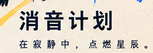
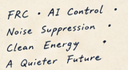

— About · 项目自述
为什么是聚变,
为什么是引力场
HUSHFUSION 从可控核聚变起步,用反引力场换取没有噪音的能源与安静无声的动力源;再往前,是物质质量归零后的引力场相变,与可以控制引力场的飞行器。
技术逻辑 · 动机 · 愿景
技术逻辑:反引力场。近期产出:没有噪音的能源、无限能源、安静无声的动力源。核心动机:可以控制引力场的飞行器与交通设施。终局愿景:物质质量归零后的引力场相变。
名字里的 HUSH 只覆盖第一阶段 —— 让聚变不再是轰鸣,而是安静的。
Controlled Fusion Through the Silence.

— 01 · 海报上的五个词
项目的五个支点
这五个词直接来自项目海报左下的手写清单,是本项目的自我定义。
- 01
Time-Varying Gravitational Field
时变引力场 —— 本项目的技术逻辑。
- 02
AI Control
项目海报上列出的方向之一:电磁场持续学习的 AI 系统。
- 03
Noise Suppression
动机层:要的是安静,不是拿降噪当手段。
- 04
Clean Energy
清洁能源方向。
- 05
A Quieter Future
安静只是第一段。终点是物质质量归零后的引力场相变,与可控引力场的飞行器。

— 02 · 论文与引用
论文与引用
-
01
The Geometric Description of Physics at the Cosmic Scale
Yuan-Jie Liu · aiXiv · v1.0 · 2026-08-21。以「流动的空间」为本原的统一物理框架：空间本身即流动的介质，一切物理对象都是这一流动的激发（锚定图案）。仅由少量公设——矢量光速（方向可变）、三个锚定方向、空间位移「股」的计数——该框架以单一链式恒等导出：质量=辛纠缠体积，信息=幺正输运下守恒的辛体积，四种力=流动动量 p = m(C − v) 的 Leibniz 分解四通道；量子关系 E = ℏω、de Broglie 关系 p = h/λ、Planck–Einstein 关系 E = hf 与不确定度积 ∆x∆p = ℏ 由螺旋几何涌现（几何选择 r = λ/2π），Pauli 不相容原理是相同「股」的几何秩判据。全部恒等式以物理常数在机器精度（相对误差 ≲ 10⁻¹⁰）数值验证，推导链在 Lean 4 中零 sorry 完整形式化；作者亦如实声明：几何选择 r = λ/2π 与其余输入常数（e, M0）的第一性推导尚待完成。
aixiv.science/abs/aixiv.260821.000002 →
Liu, Yuan-Jie. “The Geometric Description of Physics at the Cosmic Scale: Mass, Information, Causality, Force, and the Quantum Relations from Geometry.” aiXiv, v1.0, 21 Aug. 2026, aixiv.260821.000002. https://aixiv.science/abs/aixiv.260821.000002
— 03 · 时间线
时间线
目前只有一个确定的节点;后面的还在走,不预先排期。
- 01
2026-08-21
论文发布 —— 路线由此确认(论文集见上一节)。
已发生 - 02
之后
项目仍在进行;里程碑节点尚未确定,定了再按条发布。
进行中
法务
版权:© 2026 HUSHFUSION 保留所有权利。
隐私:本站不设追踪与统计,页面只在语言切换时使用浏览器本地存储;投递表单仅收集你主动填写的字段,并发送到项目方邮箱。